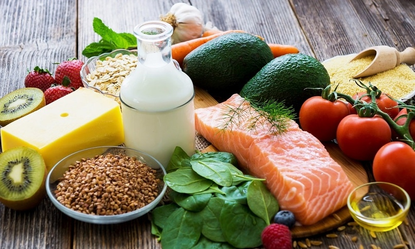

Чем кормить ребенка–спортсмена?
Вы сами сделали это, признайтесь! Вы взяли своего любимого ребенка за доверчивую детскую ручку и отвели его … в секцию фигурного катания, или гимнастики, или борьбы, или, вот еще модно стало — бадминтона. И теперь ваш ребенок не просто играет — он, простите, вкалывает, как взрослый.
И, соответственно, затрачивает намного больше энергии, чем его не спортивные сверстники. А раз он энергию тратит, значит, вы–то должны ее восполнять. Причем, делать это правильно и вовремя, иначе ребенок либо анорексией заболеть может, либо отправится в секцию сумо. Питание маленького спортсмена должно быть, прежде всего, сбалансированным: он ведь не только тренируется, но еще и растет.
В первую очередь, дети, регулярно занимающиеся спортом, нуждаются в усиленном питании. Как правило, рацион спортивного питания начинающего спортсмена обсуждается со спортивным врачом или тренером. Но существуют и общие закономерности, которые следует соблюдать в питании детей–спортсменов.
Первое и самое простое правило следующее: чем выше физическая активность ребенка, тем больше ему требуется калорий и питательных веществ, для нормального развития и роста. Задача родителей № 1 — проследить за тем, чтобы питание маленького спортсмена было полноценным. Как правило, при повышении физической нагрузки увеличивается и чувство голода. Так организм компенсирует большую затрату энергии.
Например, мальчикам–спортсменам в возрасте от 6 до 12 лет необходимо в день 1800–2400 калорий, девочкам, занимающимся спортом, нужно чуть меньше — 1600–2200 калорий.
«Характер питания детей–спортсменов определяется особенностями обмена веществ при разных видах и различных степенях интенсивности спортивной нагрузки. У детей–спортсменов, в связи с высокой интенсивностью обменных процессов, отмечается повышенный основной обмен. Основной обмен у детей превышает основной обмен взрослого человека в 1 1/2–2 раза.
Помимо повышенного основного обмена, у детей отмечаются повышенные общие энергетические затраты. Повышенный основной обмен и повышенные энергетические затраты у детей выдвигают необходимость при разработке пищевых рационов спортсменов обращать особое внимание на достаточно высокий уровень в них белка и калорийности.
Интенсивная физическая нагрузка детей сопровождается повышенной потребностью в белке. При спортивной деятельности белок используется не только на пластические цели, связанные с восстановлением тканевых элементов, но и для образования новых клеток в мышечной ткани в процессе развития мускулатуры и поддержания ее в хорошем рабочем состоянии.
Особенно необходим животный белок, способный обеспечить высокий уровень синтеза белков тканей растущего организма. Удельный вес животного белка в рационах детей–спортсменов должен быть достаточно высоким: в младшем возрасте 70–80%, в школьном 60–65% общего (суточного) количества белка. Установлено благоприятное влияние повышенных белковых норм на высшую нервную деятельность, на повышение возбудимости нервной системы, усиление рефлекторной деятельности, увеличение быстроты реакции и максимальной конденсации сил на короткий отрезок времени.
Особенно важное значение имеет обеспечение высокого уровня белкового питания при скоростных и силовых нагрузках максимальной и субмаксимальной интепсивности, так как при этих видах спортивной нагрузки отмечается наибольшее повышение интенсивности белкового обмена. Особо высокая интенсивность обмена белков наблюдается при силовых напряжениях. При этом отмечается более быстрое, чем при других нагрузках, понижение аденозинтрифосфатазной активности миозина.
В детском питании должны учитываться и качественные особенности белков. Некоторые незаменимые аминокислоты обладают выраженными ростовыми свойствами. К таким аминокислотам относятся лизин, триптофан и аргинин. Обеспечение этими аминокислотами является важной задачей питания детей–спортсменов. Наиболее богат этими аминокислотами белок мяса и рыбы, в котором лизин, триптофан и аргинин находятся в благоприятных для усвоения соотношениях. 100 г. мяса по содержанию триптофана соответствует 430 г. молока, по содержанию лизина — 600 г. молока и по содержанию аргинина — 800 г. молока.
Таким образом, в питание детей–спортсменов необходимо включать мясо (рыбу) как хорошие источники «ростовых» аминокислот. Белки злаков — муки, крупы, в том числе и манной, содержат мало лизина, но богаты аргинином. В связи с этим в детском литании целесообразно использовать молочные каши, в которых обеспечивается сочетание богатого лизином молока и богатой аргинином крупы.
Опасность возникновения жировой инфильтрации печени у спортсменов при длительных нагрузках не только субмаксимальной, но и средней интенсивности заставляет придавать особое значение поступлению в составе пищевого рациона липотропных веществ. Включение в пищевой рацион спортсменов продуктов, богатых липотропными веществами, является совершенно обязательным (яйца, творог, печеночные паштеты, мясо, телятина, птица, рыба, треска, судак и др. ).
Важнейшее значение в питании детей имеют сложные белки — фосфопротеиды, характеризующиеся наличием в своем составе фосфорных соединений. К этим жизненно необходимым относятся казеин молока и вителлин желтка яйца. Белки в молоке сочетаются с высоким содержанием кальция, который легко используется в организме для пластических целей.
Одним из основных источников «подпитки» для мышц во время интенсивных тренировок служат углеводы. Зачастую взрослые, опасаясь набрать лишний вес, стараются исключать из своего рациона эти полезные вещества. Детям же, занятым в спорте, продукты богатые углеводами необходимо потреблять во время каждого приема пищи и даже перекусов.
Однако не стоит предлагать детям простые углеводы в виде конфет, печенья и сладких газированных напитков. Не упрощайте задачу себе, применяйте в питании ребенка сложные углеводы: крупы, хлеб, рис, макароны. Сложные углеводы, в отличие от простых, усваиваются достаточно быстро, а следовательно, уровень сахара в крови ребенка будет стабилен во время всего занятия.
Перед тренировкой ребенок может нервничать и отказываться от еды. В таком случае ему можно предложить выпить спортивный энергетический напиток — и вкусно, и полезно.
Еще один важный момент в питании юного спортсмена — это давать ребенку как можно больше жидкости. Дети не потеют так же легко, как взрослые, поэтому школьники–спортсмены часто подвержены перегревам. В результате этого у ребенка очень быстро повышается температура тела, и вода начинает активно выводиться из организма.
Для предотвращения обезвоживания ребенку нужно пить 100–120 грамм жидкости каждые четверть часа. При этом некоторых напитков следует избегать, не все они одинаково полезны. Не стоит, например, пить жидкости с высоким содержанием сахара, фруктовые соки и тем более газированные безалкогольные напитки. Все они медленно выводятся из желудка, а при физической нагрузке могут стать причиной тошноты или желудочных спазмов. Предпочтение стоит отдать минеральной воде без газа или спортивным напиткам.
Ребенок, тратящий массу времени и сил на спорт, должен питаться не только калорийно, но и вовремя. Главное правило для детей–спортсменов: дробить приемы пищи. Следующее правило — наличие горячих блюд (супы, каши, второе, горячее питье).
Наиболее активные дети нуждаются в небольших приемах пищи каждые 3–4 часа. Обязателен небольшой прием пищи и перед спортивным занятием. Это поможет ребенку избежать чувства голода во время и после нагрузки и станет отличным топливом для мышц. Пища для перекусов должна содержать большое количество углеводов и мало белков, жиров и волокон. Перекусить можно фруктами (бананы, сливы, персики, дыня), йогуртом, бутербродом с сыром или спагетти с мясным соусом.